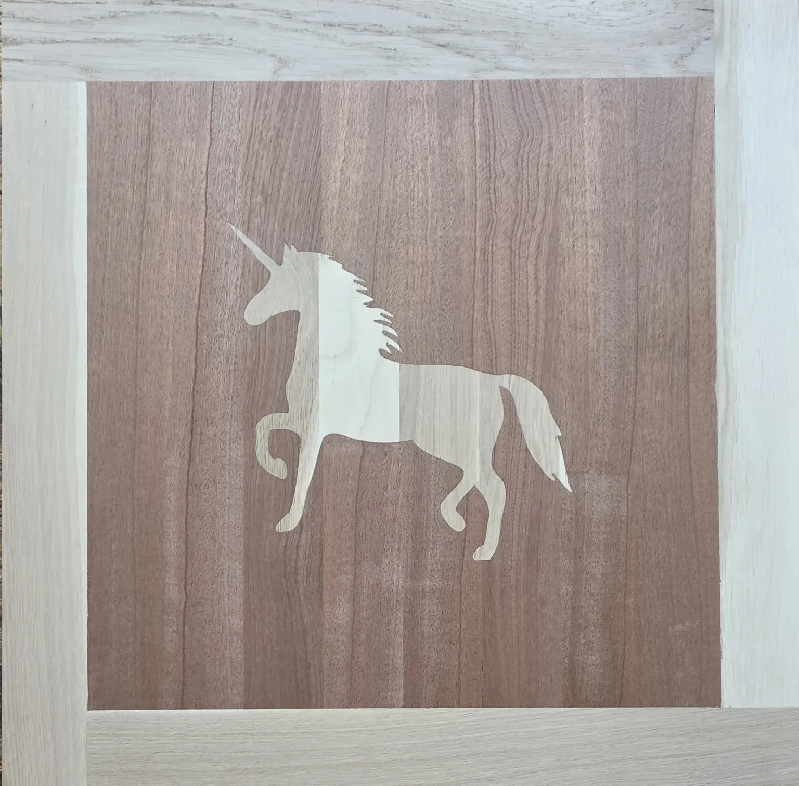
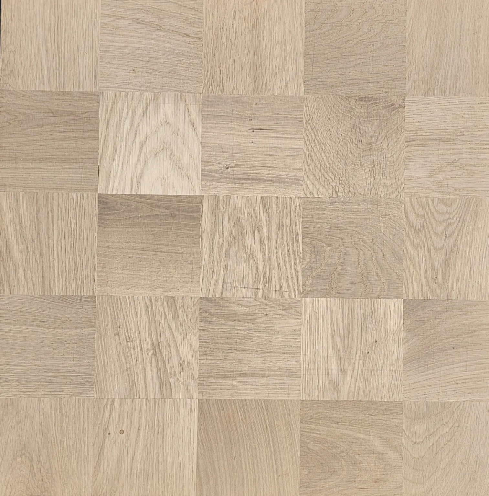
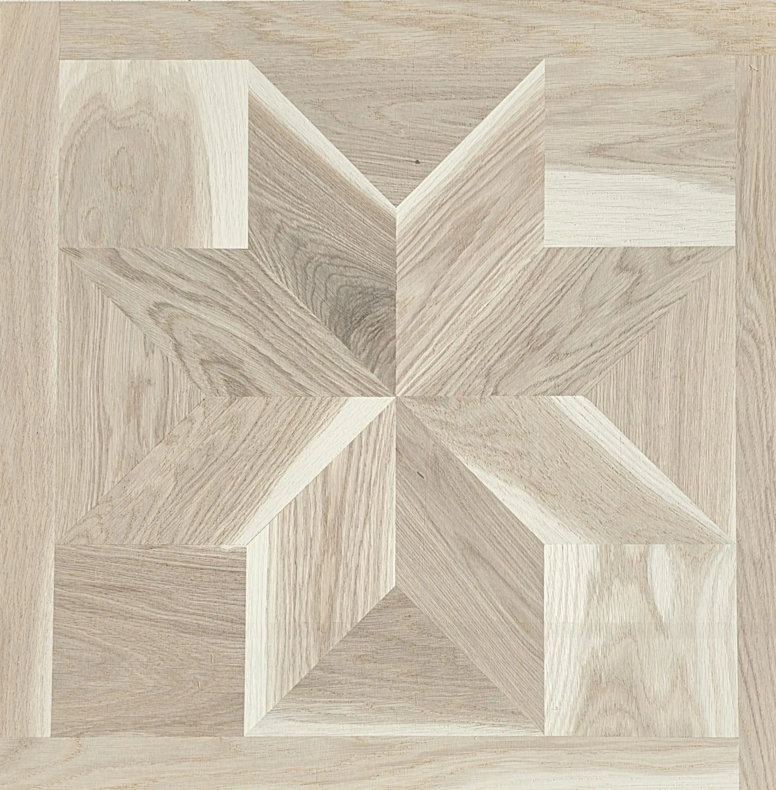

Geometrikus
Klasszikus és modern geometrikus minták valódi fából.
Több tucat meglévő minta vagy teljesen egyedi tervezés. Saját ötletet, rajzot, fotót vagy inspirációs képet is küldhet, a mintát gyárthatóságra igazítjuk.
Nettó induló ár, felületkezelés nélkül.

Klasszikus és modern geometrikus minták valódi fából.

Dekoratív motívumok és egyedi figurák, akár saját rajz alapján.

Összeragasztott, majd újrafűrészelt lamellákból kialakuló különleges fa rajzolat.
Alapméretek: 500×500 és 600×600 mm.
Egyedi méret és minta is egyeztethető. Küldhet saját rajzot, fotót, ötletet vagy inspirációs képet.
Ötlet → Egyeztetés → Tervezés → Gyártás
Alapként tölgy és kőris, de különleges, kereskedelmi forgalomban beszerezhető és műszakilag megfelelő fafajból is tudunk fedőlamellát gyártani.
Olajozás · Lakkozás · Strukturált kefélés · Kézi gyalulás
A 2 és 3 rétegű parketta egyaránt alkalmas padlófűtéshez.
A pontos gyártási idő a választott mintától, kiviteltől, fafajtól, mérettől és mennyiségtől függ.


Az alapméretek 500×500 és 600×600 mm. Egyedi méret is egyeztethető.
Igen. Küldhet saját rajzot, fotót, ötletet vagy inspirációs képet; a mintát gyárthatóságra igazítjuk.
Geometrikus, alakos/figurális és moiré minták, valamint teljesen egyedi tervezés.
Igen. A 2 és 3 rétegű parketta egyaránt alkalmas padlófűtéshez.
Jellemzően 30–60 nap, a választott mintától, kiviteltől és mennyiségtől függően.
A táblaparketta induló ára 29 000 Ft + ÁFA/m², felületkezelés nélkül. A végleges ár a minta, méret, fafaj, felület és mennyiség alapján készül.
Nem kell kész tervvel érkeznie.
Írja meg, mi tetszik vagy küldje el az ötletét; a műszaki részleteket egyeztetjük.
A Quadrum Parketta a Signum Parkett Kft. saját parkettamárkája és közvetlen gyártói értékesítési oldala. Három évtizede gyártunk rétegelt parkettát.
További információ a gyártóról